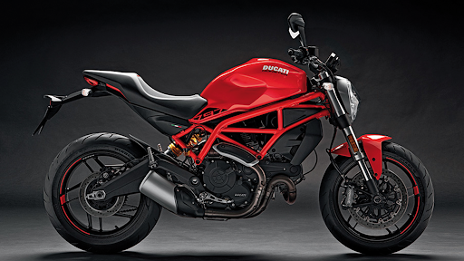
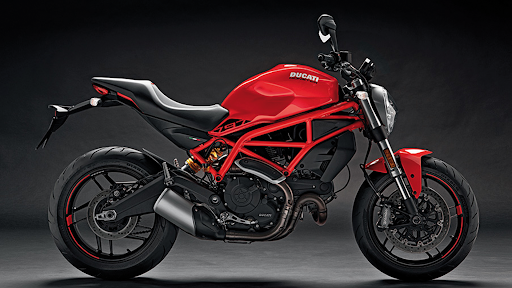

Ducati Monster 797
 

Precio final: 8.900€
Datos Técnicos y curiosos
El cátalogo de motos de Ducati se completa con la Monster 797, un modelo que supone la mejor entrada al mundo Monster. La 821, la que hasta ahora era el modelo más pequeño de la familia es una montura mucho más sofisticada y los italianos necesitaban algo más asequible.
El motor utilizado para la Monster 797 es de dos cilindros en V de 803cc y refrigerado por lo mismo que refrigera a las Ducati Scrambler y que montaban en su día en la Monster 796. De hecho, las cifras de potencia y par son las mismas (75Cv a 8.250rpm y 69 Nm a 5.750 rpm, respectivamente) que la Scrambler, como tambien lo es en suavidad de funcionamiento a bajo y medio régimen.
Volver